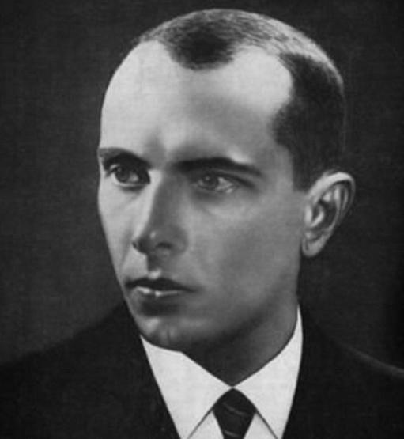

Степан Андрійович Бандера (1 січня 1909, с. Старий Угринів, нині Калуського району, Івано-Франківська область, Україна — 15 жовтня 1959, Мюнхен, Баварія, ФРН) — український політичний діяч, один із чільних ідеологів і теоретиків українського націоналістичного руху XX століття, після розколу Організації українських націоналістів — голова Проводу ОУН-Б. 
Як активний діяч УВО та ОУН має законодавчо визначений статус Борець за незалежність України у ХХ сторіччі. Вважається національним героєм України.
Степан Бандера та Ярослав Стецько були авторами Акту відновлення Української Держави 30 червня 1941 року. 5 липня 1941 року Бандеру помістили під домашній арешт, а з 15 вересня 1941 року — у центральну Берлінську в'язницю. З початку 1942 року по серпень 1944 року перебував у концтаборі Заксенгаузен у бункері «Целленбау» у відносно комфортних умовах. У вересні 1944 року його звільнили й запропонували участь у керівництві антирадянського збройного руху в тилу Червоної армії, однак Бандера відхилив пропозицію та на співпрацю не погодився. С. Бандера і Ярослав Стецько у квітні 1944 року на нараді обговорювали завдання підривної діяльності проти СРСР з керівником таємних операцій вермахту Отто Скорцені. Представники ОУН(б) та УПА, яку створила ОУН(б), в цей час проводили переговори, почали і продовжували співпрацювати з німцями, хоча інші підрозділи УПА ще воювали з нацистами в 1944 році.
Радянський уряд уповноважив КДБ вчинити вбивство Степана Бандери в Мюнхені, ФРН. Це здійснив радянський агент Богдан Сташинський 15 жовтня 1959 року.
Оцінки Степана Бандери вкрай суперечні. Після розпаду СРСР для багатьох українців його ім'я стало символом боротьби за незалежність України. Натомість, багато мешканців Польщі та Росії ставляться до нього вкрай негативно, звинувачуючи у фашизмі, тероризмі, радикальному націоналізмі, що зокрема виявлялось у фізичній ліквідації лідерів відмінних від ОУН(б) українських націоналістичних течій, і колабораціонізмі. Визначення «бандерівці», похідне від його прізвища, поступово стало загальним і застосовним до всіх українських націоналістів, незалежно від їхнього ставлення до Бандери